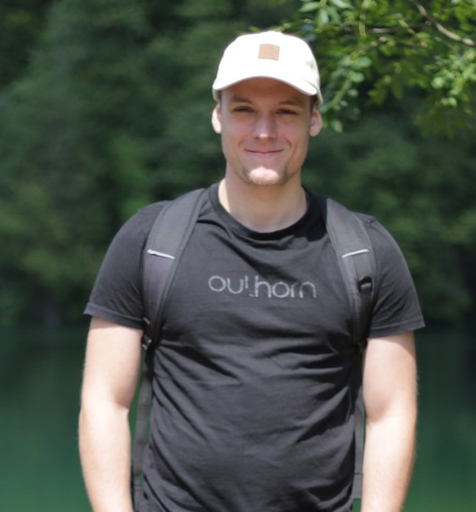

Kacper Dziedzic
Software & Vision



Kacper Dziedzic
Software & Vision
Creative and logical mind.
I specialize in software development & computer vision, focusing on projects that leverage my expertise in both fields.
A keen eye for problem detection and a strong problem-solving mindset. I excel at identifying challenges and creating effective solutions.
Dedicated to hard work and continuous learning enabling me to address complex programming issues efficiently, ensuring the delivery of high-quality results.
Let's Work Together